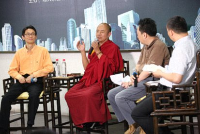
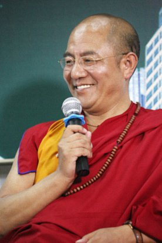

密宗文化与现代管理——北京大学座谈
『2015年6月6日』
主持人：
我们再次请出堪布。
介绍一下本场对话的两位嘉宾：一位是北大校友会的傅先生，我们的学长——在北大不管男女老幼都叫学长，也是资深媒体人、企业咨询管理界的大牛。
一位是麻省理工学院的张博士，他是彼得·圣吉全球学习型组织的中国区总裁，这次听说堪布来跟我们对话，专程从挪威赶来。
先从傅学长开始提问。
我们刚才说话大家没听见，他专门问我：“是不是什么问题都可以问啊？”他是以己之心度堪布之腹了。他说：“我们怎么能挑战大师呢？”我说：“没事，你就问吧。”其实我这话是出的一招，就是要这位专搞企业咨询的，亮一下他到底有多少功底。提吧！

傅先生：
在北大有一个传统，就是师兄被师弟坑。这不是新现象，是一直以来的常态了。
我接到邀请的时候很兴奋，因为以前看过堪布的书，所以这次第一时间就问了这句话。师弟应该知道，我是媒体出身，有些问题在我看来会比较刺激，所以就说：“是真的问，还是顺着说？”
后来师弟给了我一些鼓励，让我在这次对话中，一定要扮演一个世俗的、在滚滚红尘中一去不回头的人，奔着效率、资金、创新、创业等一系列所谓时下流行的话题来问。我说：“行，我会本色出演。”
那在提问之前，我先简单地复个盘。堪布大师刚才谈了密宗的四个管理，我把它们和现代管理学对应了一下：给予的管理，我给它对应到财富管理；语言的管理，可以对应到沟通管理；同事管理，实际上讲人与人之间的关系，尤其谈到了以身作则，这在管理上是非常重要的，可以对应到两个，一是人的管理，一是组织的管理；最后一个，我认为格外重要，大家也知道我个人在北大当创业导师，我对学弟学妹们老问的第一句话就是：“你为什么创业？”利他管理对应的，应该就是这个愿景管理。
所以先问问堪布，我这个理解对不对，或者还有没有什么补充？
索达吉堪布：
我觉得这样对应很好。
第一个财富管理，可以对应佛教的布施，因为它需要给予。现在不给财富要管人，也有一定困难，所以在管理过程中，还是需要财富的力量。
第二个沟通管理，可以对应语言管理，因为语言是沟通的最好工具。
第三个同事管理——身教，可以对应个人管理，也可以延伸到组织当中，因为任何组织都需要自身的修养和管理。
第四个利行管理，对应愿景，这个提法很好。个人的创业、企业的创新，都需要一个愿景、目标，但大多数人的目标，可能带有自私自利，关键是要把利己转化为利他。如果你有强烈的利他心，自己的事业也可能自然而然成办；如果只想着自己，反而不一定成功。世间很多成功人士，正是因为对社会有利益，从而得到社会的认可；因为被社会认可，人脉、财富等因缘也会纷至沓来。
这是两千五百多年前的佛教精神，跟今天提倡创新的时代中的管理学，也可以非常吻合。
傅先生：
这个糖衣吃了，它的炮弹该出来了。因为谈到创新，现代管理对此有一个定义。其实定义很多，我引用一个德鲁克的定义：不管是什么时候的管理，现代管理、后工业时代的管理、未来的知识管理，等等，所有这些管理的核心，都是提高劳动生产率，提高大家的管理效能、做事效能、挣钱效能。换句话说，创新是什么？就是把大家推离舒适区。不平则鸣。当你真的感受到一种苦，才能激发出最大的创造力。那这跟佛教讲的平和、不执著，是不是冲突？
因为很多佛教徒都说随遇而安——干着干着不快乐了，我就换一个。有些地方可能就事倍功半。但是做企业、做管理、做创新，有一句话叫“死去活来”，不折磨到一定的份上，不把自己从舒适区给蹬出来，几乎就没办法坚持，也没办法迎来下一个发展。
那红尘中的这件事，和佛法中的这部分有没有矛盾？
索达吉堪布：
应该不矛盾。佛教当中并没有讲不能发展、创新。很多大乘经论里说，对社会有利的事情可以做，对个人有利的事情则要有所限制，但也不是不能做；小乘则是佛教中最基本的思想，但在《阿含经》《善生经》《毗奈耶经》等经典中，也没有说不能发展。这方面我看过很多。
主持人：
不是断灭空，对吧？
索达吉堪布：
对，佛教中是这样讲。所以你刚才说的，提倡自我发展、创新、从舒适区走出来，跟佛教里讲的一切都不执著、一切都要抛弃，这两种理念其实不矛盾。
佛教中的不执著，是在最高境界中讲的道理，但这个道理不能拿到佛教的基础思想中来。
拿世间现象说，比如乔布斯喜欢佛教的禅修，但这与他的创意、发明并没有形成矛盾；李嘉诚是一个虔诚的佛教徒，但他的佛法理念，跟他整个事业的发展、对社会的贡献等，从很多方面看，也不矛盾。
实际上，很多虔诚的佛教徒正在做的事情，应该说并没有违背佛教教义，在自利的同时也在利他。
我认识一些企业家，在国内外发展得非常好。他们就很懂得掌握分寸，既能好好修行，也能管理好员工、创造自己所需要的知识、财富。
主持人：
谢谢！大家注意到没有，傅学长刚才一直在抖，他心里有点虚，还戴了串念珠在那儿压惊。现在把提问的机会交给张博士，他是学理工的，来自麻省理工学院。
张博士：
我是隔壁清华大学毕业的。清华和北大历史上就有纠葛。
傅先生：
没有，应该没有。（笑）
张博士：
今天我想跟堪布分享自己关于传统和现代的一个思考，也跟在座各位求证一下。
“现代”这个词，在大多数人的理解中，可能是指西方文化——就像下面这些建筑，而不是中国或东方的。所以这个词代表了传统的对立面，或者是一个与传统不同的东西。
东西方的这种不同，在今天好像走到了一个节点。东方，或者就说中国吧，开始对自己五千年的文明进行反思，我们叫返璞归真、回到上古；西方也在反思，发现现代有很多东西不可持续，他们提出了可持续发展。但其实这两种传统，应该各有各的特点和优势。
我刚去过巴黎最大的犹太教堂，教堂地面上画着六芒星——就是以色列国旗上的那个，两个三角形穿插在一起，代表阴阳合体。据我了解，犹太教作为基督教的前身，有很深厚的人文传统。这样的话，犹太教、中国的汉地和藏密，都不约而同讲到了阴阳合一。
今天的三个对话，恰好我被分到了管理领域，但我的第一份工作其实是教育，在清华大学教育研究院，这又跟彼得·圣吉有关，因为我跟他合作了十几年，在那里翻译了他的著作《第五项修炼》。
我觉得教育是今天能把“合一”的上古思想整合进来的领域。过去中国不讲“教育”，教育是西方传来的新概念；东方的概念是“教化”——上古黄帝的教化。我们现在可以认为黄帝是做管理的，但他当时做的就是教化，这两个在他那里是合一的。只是到了现代，我们把它分开了。
现代有很多的二元分化：管理和教育、东方和西方、美和丑，等等，这可能是现代人左脑主导的误区。
比如现代教育主要传授知识。你可以不跟人打交道，只跟书本打交道，因为你是教书、读书的。教师在整个国际上的地位都很低，挪威虽然富有，但教师的工资是最低的，学生地位就更低，为什么？因为你传授、学习的，并不在合一的状态下。
彼得·圣吉认为，现代教育是工厂流水线的模式，人像产品一样，一个年级一个年级地被塑造出来，这跟东方的教化完全不同。其实整个西方文化就是流水线，它是分化的，不是合一的。
所以现在就面临一个节点。教育要变，可能要包含做人；美学要变，可能要包含丑；管理也要变，除了管理知识、物品，按照堪布的意见，还要管理心，而且这是最重要的。
彼得·圣吉就把教育换了一个词，叫Systems Education——“系统教育”，让教育的概念有点返归上古。它变成了人的系统，指向的是人。其他几个领域可能也要换概念，比如有人就把管理换成了“治理”。
但不管怎样，我的理解是，如果能把上古或者精神传统里“合一”的思想整合进来，是不是就能够超越阴阳、善恶、美丑等等的二元分化，也就能超越东方和西方，或者说传统和现代的这种对立、冲突的状态？
索达吉堪布：
张博士在西方待了很多年，不管对教育还是管理，分析得应该是很深的。
我也有这种感觉：按照东方的思维模式和生活习惯，对西方人的心态和理念，可能无法完全掌握。
今天这个时代，一方面是信息共享、瞬息万变。我们在这里说话，西半球的人可以同步收听。我二十年前去过美国，对比来看，中国这二十年的发展非常快。很多时候确实能感觉到全球化的结果——世界已经成了“地球村”。
但另一方面，这个时代的教育和管理也同化得很厉害。中国的教育理念几乎都在学西方，西方也有很多观念是从东方学来的。在这个过程中，大家既舍不得放弃自己的传统，又不得不借鉴对方的思想，因为完全不学习，好像在全球化的今天很难发展。
这种情况下，我认为不能轻易改变自己的传统文化。因为改变起来或许很快，但恢复起来会很难、很漫长。
就像刚才你指的那些建筑，去过美国、加拿大的人就知道，我们这些都是在模仿他们。但其实他们只有五六百年的历史，并没有多么悠久的文明，只不过是建筑师根据个人的爱好和理念在塑造。而中国的整个建筑史，几千年流传下来，中间经过的南北朝、唐、宋、元、明、清，每个朝代都有自己鲜明的文化和艺术，在现存的古老建筑中依然能看得到。汉地有汉地的艺术、藏地有藏地的艺术，不同地域的艺术也都不一样，但在现代，这些差异正在消失，仅仅在建筑领域，就已经被全面西化了。
相较而言，在德国、法国、英国这些欧洲国家，他们的建筑风格并没有太大改变，至今还保存着自己的传统。而我们在懂得了西方知识之后，连文化传统也被西化了。
而且，西方模式不一定适合东方人的思维和心态。所以我们一方面要学习西方的现代文化、管理模式，但同时也要看看，中国五千年的历史和文明现在还有多少？老祖宗给我们留下了一些很珍贵的东西，不要当我们想去寻找的时候，却再也找不到。
藏地有些寺院，打算把经堂翻新成水泥的，但其实原来的木质结构非常好，我就跟他们说：“最好不要改变原来的结构，应该保存下来。”我看德国的很多建筑也是木质结构，历经三四百年都完好无损，我们为什么不能把自己的古建筑留住呢？这样还有自己的一种特色。
全世界都在发展，当我们的高楼大厦建得跟西方国家一样高的时候，或许会有一种成就感，但在这背后，可能失去了很多有价值的艺术和文化。
我们有自己的传统，包括佛教、道教、儒教中的一些知识、为人处世的道理，这些是西方根本没有的，如果全都抛弃，那是我们的损失。
主持人：
我们要穿插一个很重要的问题：“堪布您好。您谈到管理的时候讲了四摄，我很感动。但是我想问一个有挑战性的问题：您觉得管理寺院这么多年，容易吗？您是怎么管理的？还请传授传授。”
傅先生：
插一句，好像咱们有一个俗语叫：“宁带赖兵三千，不带僧众三百。”说明什么呢？僧众很难管理。而且刚才我们差点跑题到教育那儿去了，正好拉回来：其实按照现代管理来说，僧众管理也是一种组织管理，它叫“社群组织”或者“宗教组织”，那对这个组织管理，您有什么心得，是不是也是以效率为核心？
索达吉堪布：
在我的人生经历中，确实一直在寺院参与管理，到现在已经二十多年了，所以对管理方面算是有一些小小的经验吧。但我始终认为，最高层次的管理，应该是让人心收回来，是对人心的管理。
像我们佛学院居住了上万人，他们虽然来自五湖四海，有各自不同的身份、兴趣，但感觉管理起来非常容易。包括附近的派出所、公安局也觉得，对出家人的管理跟对世间人的管理有点不同。世间很多地方，哪怕只有几百、几千个人，民警可能白天晚上都要拿着电棒执勤，还会不断发生很多事，一直忙着处理。但在信仰佛教的群体里，无论出家人、在家人，相对而言还是很好管理的。
所以如果说我们有什么管理经验，就是一个方法，叫“大家一条心”，大家都调伏好自己的心。
佛教中说：“诸恶莫作，诸善奉行，自净其意，是诸佛教。”这里面所讲的“自净其意”，就是要我们调伏自心。其实个人的矛盾、冲突，人与人之间的争吵、打斗，都是因为心不堪能、没有得到调伏而导致的，如果通过一种平和的教育、调心的方法来净化内心，即使人再多、环境再艰苦、群体再复杂，每个人也可以用宁静的心态来面对，这种时候，平和、和睦的气氛会越来越增上。
人群中如果有一种信仰，或者精神依托，自然而然不会有很多违法的事。可能在众多约束中，自我约束是最有效、最有价值的。
傅先生：
非常感谢！因为本人也在北大光华管理学院讲“领导力”，领导力有一个定式：如果你能管事，你就能管一个三十多人的小公司；如果你能管人，也就是指导人，你就能管一个更大的公司；但如果你能管到他的愿景，管到他的心，你驾驭的组织就会更大，你的领导力就会更强。所以我觉得现代管理学和密宗文化确实是相通的。
但在北大不问点尖锐的问题好像不能下台，是吧？我再问个更狠的。
前段时间，大家可能都在网上看到了一篇文章，说朝阳区供养了三十万仁波切。就是说朝阳区不但出“朝阳区群众”，也出“仁波切”。
这篇文章堪布可能没看到，它的大概意思是说，现在的人心既忙且“盲”，有一种缺失感和失落感，导致很多所谓有闲有钱的人都去供养上师、活佛；也导致了很多所谓的活佛、仁波切，在俗众之间到处走动、宣扬、求供养，而且显得非常“高大上”。
他们有从藏地过来的，也有从台湾过来的，在现在的朝阳区非常流行。好像你不供养一个上师，出门都不好意思跟人打招呼。
您对这种现象怎么看？
索达吉堪布：
盛产仁波切，是吧？
现在是有这种说法，我也看过一些不同的新闻。从我的角度来分析，一方面，有时候媒体的措辞可能会带有夸张或者偏向夸张的成分，包括他们报道的数字、观察的结论等等；但另一方面，也不得不承认有这样一种现象。
社会本来就是鱼龙混杂，有好有坏。而汉地刚经历过特殊时期，很多人的思想已经开放了，但信仰是缺失的。西方国家基本上都有基督教、犹太教等的信仰；东方很多国家也有印度教、佛教等的信仰；而汉地有信仰的人非常少。以前我看过一个统计，说全球七十多亿人当中，大概十亿人没有信仰，而其中的62%都在中国。这个时候，如果恰好有一个信仰的机会，很多人可能就会像俗话说的那样，“饥不择食、慌不择路”，来不及观察上师就信了。这是汉地佛教徒存在的问题，就像你刚才说的，“忙”和“盲”。
还有一个问题，是藏传佛教的一些“仁波切”“活佛”“上师”“堪布”，他们看到了经济的吸引力，看到了汉地信众的盲目。这些人可能没有受过传统的佛教教育，在藏地也根本不是活佛、上师，但他装出非常威严的形象，也能骗到一些有钱人。这种现象应该是存在的。
为了保护信众，我们的确要有所改变。前段时间在一个法会上，我说：“以后汉地的信众最好不要供养上师们。”这样说可能让很多上师不高兴，但上师应该是不缺钱的。作为修行人，他自己的吃住用度通常都不缺；如果真是要修一些学校、寺院，你可以自己去考察，直接把钱交给那个地方。
现在有一种风气，只要有上师来汉地，上师的目的就只是收钱，弟子的目的也只是供养钱，除此之外，似乎双方都不需要什么，其实这很不合理。佛教真正的性质，就像一所学校，学校的主要目的是教育，上师摄受弟子的主要目的，也应该是教育，而不是在钱财上沟通。因为你供养我，我就成了你的上师，你也成了我的弟子——用钱来构成师徒关系，这种“原则”在藏传佛教乃至整个佛教历史上，都从来没有过。
希望将来我们可以逐渐改变一些风气。佛教徒不要急着去供养上师，要观察他是否真正传过法，是否真正对自己的解脱有利益；藏传佛教中原本有严格的观察上师的方法，但很多佛教徒不懂，最好能够学一学；上师里面肯定也有一些很好的上师，我不敢说没有，但他们不一定会在不同场合特意宣传、收大量的钱财。
这个问题，大家需要冷静思考之后再做抉择。
张博士：
密宗之所以能够对汉地有这么大的吸引力——其实它对西方人也有很大的吸引力——我的理解，因为它是对人的生命体验的一种次第修行。如果宗教对生命体验有着直接的摄受，它就会有直接的吸引力。
现代社会面临的困境，也就是眼下我们所说的“危”和“机”：可持续发展、不可持续发展、教育的危机、管理的危机等，这些社会危机，也是一个活生生的现实。对这个现实进行体验式的摄受，而不是剥离，会不会也是密宗或者大乘佛教应有的本义？
《中庸》讲：“修道之谓教。”做管理也好、做教育也好，我们修的是什么道？有没有涉及个人生活、现实生活（包括企业组织）中这些美、丑、善、恶的修行和摄受？
索达吉堪布：
博士这么讲，还是很有意义的。藏传佛教对西方国家确实有一种吸引力，既有普通民众，也有科学家，还有曾经非常坚定的基督教徒，如今都在研究、信仰藏传佛教。这样的人越来越多。
我去西方国家演讲的时候，很多学校都在讲藏传佛教在全世界的吸引力，想知道为什么会这样。我给他们分析说，从佛教比较深奥的意义来讲，这是一种缘起。当这些因缘一旦在世间出现、爆发，可能很难阻挡。但同时也会有一些负面影响，包括佛教刚从印度来到藏地的时候，也发生过很多复杂的现象，但后来还是延续下来，到目前都非常完整。
并非因为我是藏族人，就把藏地的好处夸大，这是东西方很多学者公认的一件事情。现在藏传佛教的寺院中仍然保留着《大藏经》，不单是存放着它的经函，而且它的思想有人能传讲，有人能领会，我觉得这非常重要。
就像北大，如果只在图书馆里放着很多教材，可能还不行，只有当北大的老师和学生，将北大精神掌握在自己心里的时候，这所大学才算真正培养了人才。
所以对于藏传佛教，一方面就像博士讲的那样，它多多少少能满足今天很多汉族信众和西方人的需求，依靠修行的境界、力量和加持，能解决现代生活中的一些问题，我想这是不可否认的现实。但另一方面也要看到，佛教会逐渐传播到不同地方，遍地开花，这是很多授记中讲到的，也是历史的必然，在这个过程中，也许正面和负面的消息都会出现，会有从中受益的人，也会有受到负面影响的人。但这个世间，往往受益者的消息传不出去，受害者的消息却不胫而走。
昨天我在中国中医科学院也说，其实现在的医患矛盾在整个中国来讲并不是很严重，医患之间相互受益的情况应该占到90%以上，有矛盾的可能只是极少数，但人们茶余饭后喜欢去传、去议论的，更多是这些负面的话题。
这也是世间人的一个特点：有什么好处、优点，大家不愿意说，有一点不好的事，大家都来围观，拼命挖掘。正因如此，有些媒体也不愿意报道那些好的、平和的消息，而是报道受人关注、令人惊讶的消息，抓住一个点挖出来，用放大镜扩大。
所以看到一些新闻的时候，我也不是完全相信，包括藏传佛教的仁波切，我并不觉得那么多人都在骗钱；但客观判断，个别乱象应该是有的。
主持人：
现场观众提了一个问题，我觉得非常好。他说：“在现代社会中，汉地曾经出现过农禅并举，出家人可以从事农业生产；在台湾和日本，出家人还可以经商。那么从管理角度讲，藏地的供养制度是否也能在一定程度上进行改良，比如从事一些自产自足的世俗活动？”

索达吉堪布：
是有这样的情况。国家也提倡“以寺养寺”，就是寺院自己养自己。
其实供养本身在原始佛教时期就有，包括泰国、斯里兰卡、缅甸等小乘国家，现在都还有供养的传统，施主会供养出家人一些饮食。
但我想讲的是，不管在中国的藏地、台湾还是日本，很多佛教徒可能把供养看得太重了。无论你是一个学佛的普通信众，还是一位上师，都不应该看重这个，因为它跟我们的修行没有很大关系，只是经济上的事情而已，有也可以，没有也可以。
从另一个角度讲，如果你有能力消受，住富丽堂皇的高楼、穿价值连城的衣服也无可厚非，这在大乘经典和小乘的《毗奈耶经》里都有开许。但我们通常认为，世间人对金钱会比较看重，把它当作人生最重要的目标；而作为希求解脱、弘扬佛法的修行人，应该不会把供养当回事，因为没供养也照样成就，有供养也不一定成就。所以上师也好、弟子也好，对财富、生活还是不要太执著了。
像以前汉传佛教的虚云老和尚，他的寺院都是自己开垦、种菜。我去过他的一些丛林道场，到今天，那里的出家人也还在靠自己的耕耘维持生活。
当然，不同地方有不同的传统，不能一概而论，大家都可以按自己的方式来生活。而藏地寺院的生活方式，应该是讲经说法，这是藏传佛教最应该看重的。
我经常说，藏地的每一个寺院都相当于一所学校，它不仅教授佛法知识，也教授传统知识。之所以藏地的很多传统得以保存，寺院其实在中间起到非常大的作用。可以说，寺院是藏地的教育基地。
比如我熟悉的两个县，人口都在四万左右，一个县有二十多座寺院，另一个县有三十多座。在藏地，几乎每个县都有大大小小的寺院。你们如果去藏地，就能经常看到金碧辉煌的经堂，走几步路，再看到一个佛塔，走几步路，又看到一个寺院。
寺院里摆放的佛像可能代表了一种藏族文化，但更重要的是这个寺院有没有长期学修，如果没有这些，藏族人会认为这个寺院不是很有意义。
傅先生：
我想再问最后一个问题。
赵朴初先生有一个说法：所有佛教的教义都离不开四个字：苦、集、灭、道，也就是说，因为苦，所以要找原因，找到解决的方法，然后去解决这个问题；而在管理学中，我们会说发现痛点、找到原因、找到解决方案、最后解决问题——这两者好像是吻合的。如果是，那像我这样在滚滚红尘中一去不复返的人，是不是也可以修行？
我也是帮广大即将走向创业、走向商业组织、走向这个社会体系的同学们，一起来问这个问题。
索达吉堪布：
这句话不仅是赵朴初先生说的，佛经中记载，释迦牟尼佛在印度鹿野苑初转法轮的时候，就宣讲了苦集灭道的道理。
刚才教授提出四谛跟管理学的对应：发生问题的时候先找到痛点，然后分析它的原因，找到解决方案，最后呈现解决的结果——从这四个方面来对应，某种意义上也可以。
但从深度上讲，苦集灭道要解决的是人生的根本痛苦，痛苦的根源是无明和烦恼，解决的方法是证悟道谛，现前的结果是一种最快乐、最永恒的寂灭。应该是这样四个层次。
世间跟这四个层次比较对应的，还有病的比喻：比如我们病了，要知道病的根源，然后找医生开药，最后痊愈。这在弥勒菩萨的《宝性论》中讲得比较清楚。
其实在生活中遇到任何问题，都可以按这四个步骤来解决。比如跟家人吵架了，特别痛苦；就去分析吵架的根源，可能是因为误会、不理解，或者自私；然后寻求解决的办法——自己心里大概知道是什么；最后得到和平、快乐的家庭关系。
所以用比较相似的理念，在生活中展现苦集灭道四谛的修行，是完全可以的。
主持人：
非常感谢！谢谢傅先生、张博士。